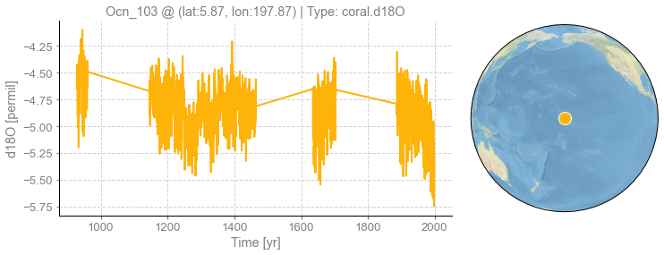

Monte-Carlo iterations#
[1]:
%load_ext autoreload
%autoreload 2
import cfr
Create a reconstruction job object#
[2]:
job = cfr.ReconJob(verbose=True)
print(job)
>>> job.configs:
{}
<cfr.reconjob.ReconJob object at 0x7f9dc0dc99a0>
Load a proxy database#
[37]:
df = pd.read_pickle('./data/pages2k_dataset.pkl')
mask = df['paleoData_pages2kID'] == 'Ocn_103'
idx = df[mask].index.values[0]
[21]:
import pandas as pd
df_palmyra = pd.read_table('./data/palmyra2013.txt', skiprows=118)
df_palmyra
[21]:
| age | d18O | |
|---|---|---|
| 0 | 928.125 | -4.651 |
| 1 | 928.209 | -4.631 |
| 2 | 928.292 | -4.629 |
| 3 | 928.375 | -4.562 |
| 4 | 928.459 | -4.580 |
| ... | ... | ... |
| 6379 | 1998.044 | -5.435 |
| 6380 | 1998.127 | -5.493 |
| 6381 | 1998.210 | -5.469 |
| 6382 | 1998.294 | -5.413 |
| 6383 | 1998.377 | -5.262 |
6384 rows × 2 columns
[38]:
df.loc[idx, 'year'] = df_palmyra['age'].values
df.loc[idx, 'paleoData_values'] = df_palmyra['d18O'].values
df.loc[idx, 'dataSetName'] = 'Ocn-Palmyra.Emil-Geay.2013'
[40]:
df.to_pickle('./data/pages2k_updated_Palmyra_dataset.pkl')
[41]:
# job.load_proxydb('./data/pages2k_dataset.pkl', verbose=True)
job.load_proxydb('./data/pages2k_updated_Palmyra_dataset.pkl', verbose=True)
>>> job.configs["proxydb_path"] = ./data/pages2k_updated_Palmyra_dataset.pkl
>>> 692 records loaded
>>> job.proxydb created
[42]:
fig, ax = job.proxydb.records['Ocn_103'].plot()

Filter a proxy database#
[4]:
pids = [
'Ocn_065',
'Ocn_075',
'Ocn_096',
'Ocn_101',
'Ocn_070',
'Ocn_103',
'Ocn_077',
'Ocn_122',
'Ocn_138',
'Ocn_095',
'Ocn_104',
'Ocn_125',
'Ocn_087',
]
job.filter_proxydb(by='pid', keys=pids, verbose=True)
fig, ax = job.proxydb.plot()
>>> 13 records remaining
>>> job.proxydb updated

Annualize/seasonalize the proxy database#
[5]:
# we only annualize coral records
job.annualize_proxydb(months=[12, 1, 2], ptypes=['coral'], verbose=True)
>>> job.configs["annualize_proxydb_months"] = [12, 1, 2]
>>> job.configs["annualize_proxydb_ptypes"] = ['coral']
Annualizing ProxyRecord: 100%|██████████| 13/13 [00:01<00:00, 7.89it/s]
>>> 13 records remaining
>>> job.proxydb updated
Load climate model priors#
[6]:
job.load_clim(
tag='prior',
path_dict={
'tas': './data/tas_sfc_Amon_iCESM_past1000historical_085001-200512.nc',
},
anom_period=[1951, 1980],
verbose=True,
)
>>> job.configs["prior_path"] = {'tas': './data/tas_sfc_Amon_iCESM_past1000historical_085001-200512.nc'}
>>> job.configs["prior_anom_period"] = [1951, 1980]
>>> job.configs["prior_lon_name"] = lon
>>> prior variables ['tas'] loaded
>>> job.prior created
Load instrumental observations#
[7]:
job.load_clim(
tag='obs',
path_dict={
'tas': './data/gistemp1200_ERSSTv4.nc',
},
rename_dict={'tas': 'tempanomaly'},
anom_period=[1951, 1980],
verbose=True,
)
>>> job.configs["obs_path"] = {'tas': './data/gistemp1200_ERSSTv4.nc'}
>>> job.configs["obs_rename_dict"] = {'tas': 'tempanomaly', 'pr': 'precip'}
>>> job.configs["obs_anom_period"] = [1951, 1980]
>>> job.configs["obs_lon_name"] = lon
>>> obs variables ['tas'] loaded
>>> job.obs created
Calibrate the PSMs#
[8]:
ptype_psm_dict = {
'coral.d18O': 'Linear',
'coral.SrCa': 'Linear',
'coral.calc': 'Linear',
}
ptype_season_dict = {
'coral.d18O': [12, 1, 2],
'coral.SrCa': [12, 1, 2],
'coral.calc': [12, 1, 2],
}
job.calib_psms(ptype_psm_dict=ptype_psm_dict, ptype_season_dict=ptype_season_dict, verbose=True)
>>> job.configs["ptype_psm_dict"] = {'coral.d18O': 'Linear', 'coral.SrCa': 'Linear', 'coral.calc': 'Linear'}
>>> job.configs["ptype_season_dict"] = {'coral.d18O': [12, 1, 2], 'coral.SrCa': [12, 1, 2], 'coral.calc': [12, 1, 2]}
>>> job.configs["psm_calib_period"] = [1850, 2015]
Calibrating the PSMs:: 77%|███████▋ | 10/13 [00:00<00:00, 16.07it/s]
The number of overlapped data points is 0 < 25. Skipping ...
Calibrating the PSMs:: 100%|██████████| 13/13 [00:00<00:00, 15.21it/s]
>>> The PSM for Ocn_138 failed to calibrate.
>>> 12 records tagged "calibrated" with ProxyRecord.psm created
Forward the PSMs#
[9]:
job.forward_psms(verbose=True)
Forwarding the PSMs:: 100%|██████████| 12/12 [00:03<00:00, 3.36it/s]
>>> ProxyRecord.pseudo created for 12 records
[10]:
# let's add the pids into the configurations
job.mark_pids(verbose=True)
>>> job.configs["pids"] = ['Ocn_065', 'Ocn_075', 'Ocn_096', 'Ocn_101', 'Ocn_070', 'Ocn_103', 'Ocn_077', 'Ocn_122', 'Ocn_138', 'Ocn_095', 'Ocn_104', 'Ocn_125', 'Ocn_087']
Annualize/seasonalize the climate model prior#
[11]:
job.annualize_clim(tag='prior', verbose=True, months=[12, 1, 2])
>>> job.configs["prior_annualize_months"] = [12, 1, 2]
>>> Processing tas ...
>>> job.prior updated
[12]:
job.regrid_clim(tag='prior', nlat=42, nlon=63, verbose=True)
# job.prior['tas'].da
>>> job.configs["prior_regrid_nlat"] = 42
>>> job.configs["prior_regrid_nlon"] = 63
>>> Processing tas ...
Saving the job object#
[13]:
job.save(save_dirpath='./data/exp_mc', verbose=True)
>>> job.configs["save_dirpath"] = ./data/exp_mc
>>> job saved to: ./data/exp_mc
Load the job object#
[14]:
import pandas as pd
job = pd.read_pickle('./data/exp_mc/job.pkl')
Data assimilation#
[15]:
job.run_mc(recon_seeds=list(range(20)), verbose=True)
>>> job.configs["recon_period"] = [0, 2000]
>>> job.configs["recon_loc_rad"] = 25000
>>> job.configs["recon_timescale"] = 1
>>> job.configs["recon_seeds"] = [0, 1, 2, 3, 4, 5, 6, 7, 8, 9, 10, 11, 12, 13, 14, 15, 16, 17, 18, 19]
>>> job.configs["assim_frac"] = 0.75
>>> job.configs["compress_params"] = {'zlib': True, 'least_significant_digit': 1}
>>> job.configs["output_full_ens"] = False
>>> seed: 0 | max: 19
KF updating: 100%|██████████| 2001/2001 [00:17<00:00, 112.12it/s]
>>> Reconstructed fields saved to: ./data/exp_mc/job_r00_recon.nc
>>> seed: 1 | max: 19
KF updating: 100%|██████████| 2001/2001 [00:24<00:00, 81.36it/s]
>>> Reconstructed fields saved to: ./data/exp_mc/job_r01_recon.nc
>>> seed: 2 | max: 19
KF updating: 100%|██████████| 2001/2001 [00:26<00:00, 74.32it/s]
>>> Reconstructed fields saved to: ./data/exp_mc/job_r02_recon.nc
>>> seed: 3 | max: 19
KF updating: 100%|██████████| 2001/2001 [00:25<00:00, 77.84it/s]
>>> Reconstructed fields saved to: ./data/exp_mc/job_r03_recon.nc
>>> seed: 4 | max: 19
KF updating: 100%|██████████| 2001/2001 [00:27<00:00, 72.41it/s]
>>> Reconstructed fields saved to: ./data/exp_mc/job_r04_recon.nc
>>> seed: 5 | max: 19
KF updating: 100%|██████████| 2001/2001 [00:28<00:00, 70.58it/s]
>>> Reconstructed fields saved to: ./data/exp_mc/job_r05_recon.nc
>>> seed: 6 | max: 19
KF updating: 100%|██████████| 2001/2001 [00:26<00:00, 76.16it/s]
>>> Reconstructed fields saved to: ./data/exp_mc/job_r06_recon.nc
>>> seed: 7 | max: 19
KF updating: 100%|██████████| 2001/2001 [00:27<00:00, 72.19it/s]
>>> Reconstructed fields saved to: ./data/exp_mc/job_r07_recon.nc
>>> seed: 8 | max: 19
KF updating: 100%|██████████| 2001/2001 [00:26<00:00, 74.89it/s]
>>> Reconstructed fields saved to: ./data/exp_mc/job_r08_recon.nc
>>> seed: 9 | max: 19
KF updating: 100%|██████████| 2001/2001 [00:27<00:00, 73.56it/s]
>>> Reconstructed fields saved to: ./data/exp_mc/job_r09_recon.nc
>>> seed: 10 | max: 19
KF updating: 100%|██████████| 2001/2001 [00:26<00:00, 74.85it/s]
>>> Reconstructed fields saved to: ./data/exp_mc/job_r10_recon.nc
>>> seed: 11 | max: 19
KF updating: 100%|██████████| 2001/2001 [00:26<00:00, 76.66it/s]
>>> Reconstructed fields saved to: ./data/exp_mc/job_r11_recon.nc
>>> seed: 12 | max: 19
KF updating: 100%|██████████| 2001/2001 [00:25<00:00, 78.45it/s]
>>> Reconstructed fields saved to: ./data/exp_mc/job_r12_recon.nc
>>> seed: 13 | max: 19
KF updating: 100%|██████████| 2001/2001 [00:25<00:00, 79.47it/s]
>>> Reconstructed fields saved to: ./data/exp_mc/job_r13_recon.nc
>>> seed: 14 | max: 19
KF updating: 100%|██████████| 2001/2001 [00:26<00:00, 75.27it/s]
>>> Reconstructed fields saved to: ./data/exp_mc/job_r14_recon.nc
>>> seed: 15 | max: 19
KF updating: 100%|██████████| 2001/2001 [00:28<00:00, 69.37it/s]
>>> Reconstructed fields saved to: ./data/exp_mc/job_r15_recon.nc
>>> seed: 16 | max: 19
KF updating: 100%|██████████| 2001/2001 [00:28<00:00, 71.27it/s]
>>> Reconstructed fields saved to: ./data/exp_mc/job_r16_recon.nc
>>> seed: 17 | max: 19
KF updating: 100%|██████████| 2001/2001 [00:27<00:00, 71.54it/s]
>>> Reconstructed fields saved to: ./data/exp_mc/job_r17_recon.nc
>>> seed: 18 | max: 19
KF updating: 100%|██████████| 2001/2001 [00:26<00:00, 76.17it/s]
>>> Reconstructed fields saved to: ./data/exp_mc/job_r18_recon.nc
>>> seed: 19 | max: 19
KF updating: 100%|██████████| 2001/2001 [00:31<00:00, 62.64it/s]
>>> Reconstructed fields saved to: ./data/exp_mc/job_r19_recon.nc
>>> DONE!
Save the configurations to a YAML file#
[16]:
job.save_cfg(verbose=True)
>>> job.configs saved to: ./data/exp_mc/configs.yml